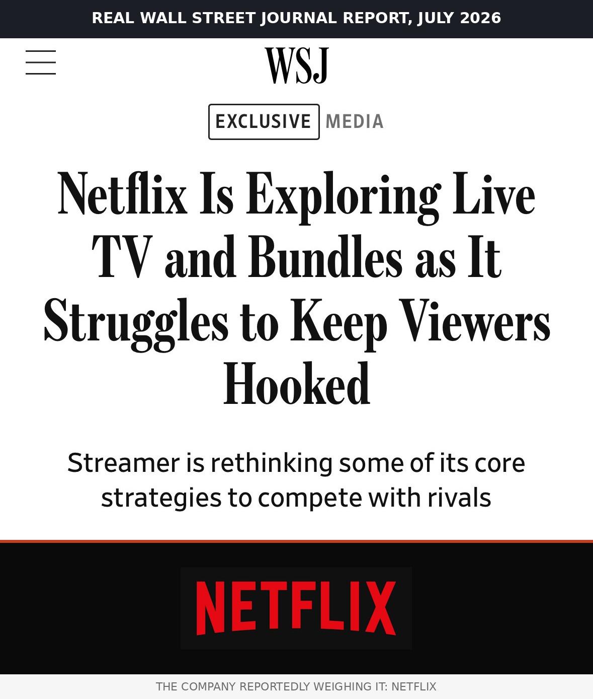

Netflix spent two decades selling one idea: no schedule, no channel, watch anything whenever you want. Wall Street Journal reporting from July 2026 says the company is now discussing something closer to the format it built its identity against: always-on channels, organised by genre, that pick something and keep it running instead of asking a subscriber to choose again. Profit keeps climbing and churn sits at industry lows. What's reportedly pushing the idea forward is a quieter number: Netflix's own share of US TV viewing fell to 7.8% in April 2026, its lowest point since May 2025.
The argument in this report is that the browsing screen hides three separate problems, not one vague complaint about too much content. People struggle to choose between hundreds of options. What they do choose often gets parked in a watchlist for a future self who never shows up. And what actually gets pressed play on is frequently abandoned within the first act, before a show has had a real chance to earn anyone's attention. Each failure point has its own separately tested evidence, most of it from Netflix's own published research.
What follows walks through all three in order, an earlier, lighter fix Netflix already tried and mostly failed with, and why a genuinely structural change, a channel with no menu at all, might succeed where a shuffle button didn't. The honest complication comes last: one of the three problems this idea targets isn't obviously fixed by it.
The story in four parts
Netflix's entire pitch was no schedule and no menu. Now it's reportedly designing one back in.
Choosing, adding to a list, and actually finishing all break down separately, and differently.
A 2020 shuffle button solved a smaller version of the same problem, and mostly didn't work.
Removing the menu doesn't remove the gap between what you want tonight and what you meant to watch.
The evidence at a glance
Shoppers who stopped at a 24-jam display bought one at barely a tenth the rate of shoppers who stopped at a 6-jam display, same store, same crowd.
How long Netflix's own published research says the average subscriber browses before finding something to watch, or giving up entirely.
Of viewers who reach a show's real “hooked” episode go on to finish season one, but Netflix's own data found nobody is ever hooked by the pilot.
Of streaming subscribers say they've cancelled a service, or would, for one specific reason: they couldn't find anything to watch.
Reed Hastings built Netflix's entire value proposition against the channel: a subscriber picks a title, not a timeslot. That pitch is reportedly being reconsidered. Multiple outlets, citing Wall Street Journal reporting from July 2026, describe internal discussions about always-on channels organised by genre, kids, documentaries, sports, comedy, that would auto-sequence content instead of returning a subscriber to a menu after every episode. Netflix executives have also reportedly discussed bundling third-party apps such as NBCUniversal's Peacock directly into the homepage as tiles.
None of this is confirmed by Netflix itself, and no timeline, format, or content slate has been announced. A working version already exists, though: in France, Netflix now distributes linear and on-demand programming from broadcaster TF1, including the 24-hour news channel LCI, inside the Netflix app itself, expanding to every French member from summer 2026. Netflix has also tried a narrower version of this idea before: a 2020 shuffle feature, “Play Something,” picks a title automatically from a subscriber's own viewing history. It never removed the menu. It just added a button that skips it, and pressing that button is itself still a choice.
Nielsen's own Gauge report puts Netflix's share of total US TV viewing at 7.8% in April 2026, its lowest since May 2025, second only to YouTube. Netflix's own annual business review reportedly flagged declining viewing duration and completion rates as the concern driving the always-on-channel discussions.
The report this whole piece is built on, real and currently live, not a paraphrase of it.

The Wall Street Journal, Exclusive. “Netflix Is Exploring Live TV and Bundles as It Struggles to Keep Viewers Hooked,” the exact headline behind the case above. Captured July 2026.
A real, paywalled report exists; what it describes doesn't. Netflix itself still hasn't confirmed a timeline, format, or content slate, exactly as the case above already notes.
The channel idea reported above targets exactly the moment described there: the menu itself, the minute or two before anything plays. That moment has its own name in behavioural economics, Choice Overload, and its own founding demonstration, run in a real grocery store.
Shoppers offered a tasting table of 24 jams were more likely to stop and look, 60% of passersby versus 40%. But of everyone who stopped, only 3% bought a jar, against 30% at a 6-jam table, one tenth the conversion rate from a table that drew more attention. A later meta-analysis of 50 studies found the effect real but variable, strongest exactly where a streaming catalogue lives: when options are hard to compare and the chooser lacks expertise in the category.
Netflix's own published research measures the identical moment on its own platform, no jam required. The average subscriber browses for 60 to 90 seconds, reviewing 10 to 20 titles, about three in real detail, before finding something or giving up. In the authors' own words, that window is the whole game: the user either finds something of interest, or the risk of abandoning the service entirely increases substantially.
Industry surveys put a number on how often that 60 to 90 second window fails. US viewers now spend around 10.5 to 12 minutes per session deciding what to watch, adding up to roughly 110 hours a year, nearly five full days, on the decision alone. Only 19% of people know what they want to watch before they turn the TV on, and 45% describe the whole experience as overwhelming.
Multiple market-research firms, not academic labs, track this figure year over year, and it has been rising: Nielsen Gracenote's State of Play report and TiVo's video trends survey both put average per-session search time above 10 minutes in their most recent rounds, up from under 9 minutes a few years earlier.
Surviving the menu doesn't end the problem. A second failure point sits right behind it: much of what actually gets added to a list is chosen by a planning self who will not be the one watching it. The clearest evidence for this predates Netflix by a decade, and it comes from an unglamorous source: online DVD rental queues.
Comparing the same customers' rental and return patterns, researchers found “should” films, documentaries, prestige dramas, were held significantly longer before being watched or returned than “want” films, comedies and action. When a customer queued a should film ahead of a want film, they were meaningfully more likely to watch them out of order, want first, reversing the sequence they had planned for themselves.
The first two failure points happen before anything plays. The third happens after: something gets chosen, the play button gets pressed, and it still doesn't survive the first act. Netflix's own internal research found a specific reason this happens on schedule, not at random.
Analysing viewing data across more than 20 shows and 16 markets, Netflix's data science team found no series ever hooked viewers on its pilot episode. A later, specific episode did the real work, episode 2 for a show like Breaking Bad, episode 3 for Orange Is the New Black, and 70% of viewers who reached that specific episode went on to finish the whole season. Anyone who quits before that episode, which by definition is most of the pilot's audience, never gets the chance to be hooked at all.
Netflix's own consumer insights team pulled viewing data from accounts starting season one of a title between January and July 2015, across 16 markets, to find the exact episode where a critical mass of viewers stopped dropping off and kept watching to the end of the season.
What it teaches: a viewer abandoning a show ten to thirty minutes in isn't necessarily judging the whole series fairly. On Netflix's own numbers, the pilot alone was never enough to hook anyone, on any of the 20-plus shows studied.
Play Something, the 2020 shuffle button described earlier, targeted this exact funnel and mostly didn't move it. The reason lines up with a much older, better-tested finding on this site: the Default Effect. An opt-in tool never removes a choice point, it only offers an escape hatch from one, and using an escape hatch is itself a decision a tired browser still has to make.
A pre-selected option gets chosen at dramatically higher rates than the identical option offered as an active choice, even when picking would take seconds. An always-on channel applies that same logic structurally rather than as a button: a subscriber who opens the app lands inside something already playing, with no menu screen in between at all. That's a stronger, more structural move than Play Something ever was, closer to changing what happens by default than to adding one more thing to notice and click.
Put together, the three failure points above and the default-effect logic behind a channel explain why the idea could plausibly work on two of them. Removing the menu removes the moment choice overload happens in, and it removes the repeated re-choosing between episodes that gives up so many viewers before they reach the hook. The watchlist problem is a different shape entirely, and nothing about a genre channel obviously solves it.
A documentary channel running on autopilot still competes with a comedy channel running on autopilot, and the same want self that skipped the highbrow DVD will just flip the channel, exactly the behaviour cable always allowed. The commercial stakes for getting any of this right are real: roughly half of streaming subscribers say they've cancelled a service, or would, specifically because they couldn't find anything to watch. Across all three failure points, the pattern is the same: the menu, not the catalogue, is the problem behavioural science would have predicted.
A Google Cloud survey found 48% of respondents had cancelled a streaming service specifically because they couldn't find anything to watch. Gracenote's 2025 State of Play report found a near-identical 49% who said the same difficulty would make them willing to cancel.
Each failure point above has its own fuller write-up elsewhere on this site, with the full studies, methodology critiques, and real-world extensions this report only had room to summarise.